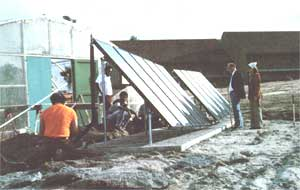
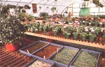

The Earle E. Morris, Jr. Alcohol anti Drug Addiction Center's new sun-heated greenhouse provides . . a
Now that folks everywhere are discovering-and utilizing-the advantages of solar power, it's not unusual to find the sun being used to heat everything from doghouses to office buildings. Even the South Carolina Department of Mental Health got into the act last year, when it installed a solar collection system at one of its agencies . . . the Earle E. Morris, Jr. Alcohol and Drug Addiction Center in Columbia, South Carolina.
A three-year-old greenhouse at the Morris Village was converted-in January 1979-from No. 2 fuel oil to solar heat, as a demonstration project designed to reduce energy costs. The active system, which was built in only two weeks at an initial expense of $3,000, has proved to be more cost-effective (and more dependable) than the oil furnace that was used previously.
Unfortunately, exact figures aren't yet available for the savings in fuel expense over the structure's first full winter of "going solar". But an administrator reports that, between the new system's installation on January 15 and April 1, the greenhouse used "no oil of any consequence".
And, although the folks at Morris Village need their solar system mainly during the winter months, they're planning to modify it to obtain summer energy savings as well. Soon, two nearby residence cottages will have the water in their 120gallon heater tanks prewarmed by energy captured in the solar collection panels.
The facility's standard Quonset-shaped greenhouse-which is 30 feet wide and 64 feet long, and consists of two layers of 4-mil plastic "skin" stretched over an aluminum frame-was retrofitted by setting up ten solar collectors, behind a ground cover, at a point eight feet away from the greenhouse. The huge plates were then connected to two heat exchangers (mounted in the top of the building), which transfer the accumulated heat to a 550gallon insulated water tank located inside the solarium.
The greenhouse itself operates as part of a three-fold therapy program for residents of the intensive care treatment facility. Activities Director Barrett Patterson tells us that the addiction center's inhabitants-who range in age from 13 to 70 years-usually contract for a stay of eight to 10 weeks ... which includes a full schedule of group, recreational, and occupational therapy.
Work in the greenhouse-growing vegetables as well as flowers for Morris Village's landscaping-is a primary activity in the occupational therapy program. Furthermore, since many of the residents come from rural areas, they can return to their "agrarian roots" by participating in the horticultural activities. So the basic reconstructive goals of the Morris Addiction Center are realized ... with a little help from an operative solar greenhouse.
|
Ten collections panels, two heat exchangers, and an insulated water storage tank keep the greenhouse warm. The entire project's cost was $3,000 . . . and since its conversion, the 30' X 64' structure has used almost no fuel oil. |
 Vegetation in this hothouse at the addiction center has obviously flourished since a sun-heating system was installed. |
 Center residents grow vegetables and ornamentals as therapy. |
|
|
|
|